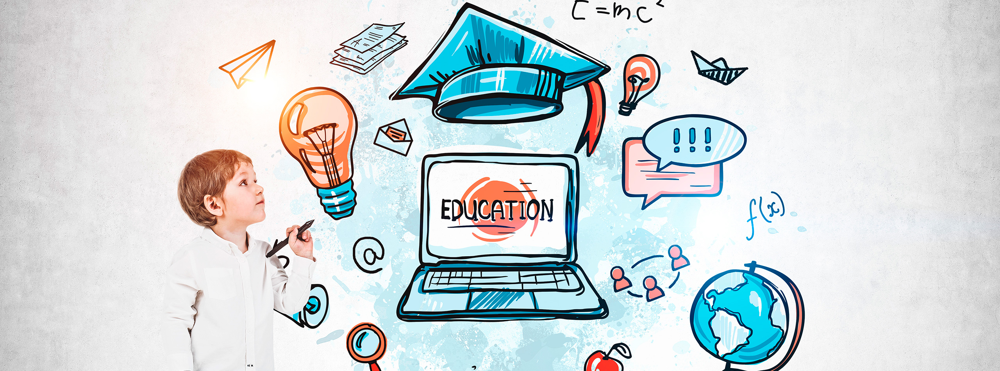

La Revolución Digital ha generado un cambio profundo en la manera en que las personas acceden al conocimiento. Hoy, gracias a la tecnología, aprender ya no se limita al salón de clases. Plataformas digitales, cursos en línea y herramientas interactivas han abierto nuevas posibilidades para estudiantes y docentes de todo el mundo.
El acceso a Internet ha permitido que millones de personas estudien desde cualquier lugar, a cualquier hora. La educación a distancia, que antes era limitada, hoy se ha convertido en una alternativa real y efectiva, especialmente después de la pandemia. Recursos como videos educativos, simuladores, aplicaciones y juegos didácticos enriquecen la experiencia de aprendizaje.
Además, las herramientas de colaboración en línea permiten que los estudiantes trabajen en equipo sin necesidad de estar físicamente en el mismo lugar. Google Drive, Zoom y otras plataformas han transformado la manera de enseñar y aprender, haciendo del aula un espacio más dinámico y conectado con el mundo.
A pesar de todos los beneficios, también existen retos. No todos tienen acceso a dispositivos o conexión estable, lo que genera desigualdades. Sin embargo, la digitalización educativa es un paso firme hacia el futuro, donde el conocimiento será más libre, accesible e inclusivo que nunca antes.
